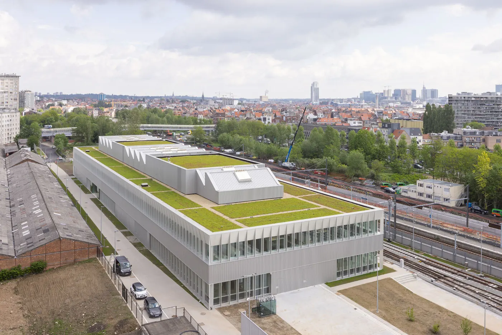
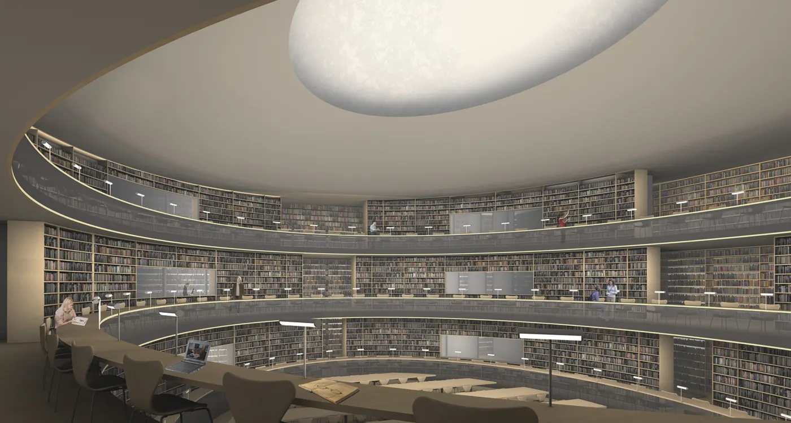
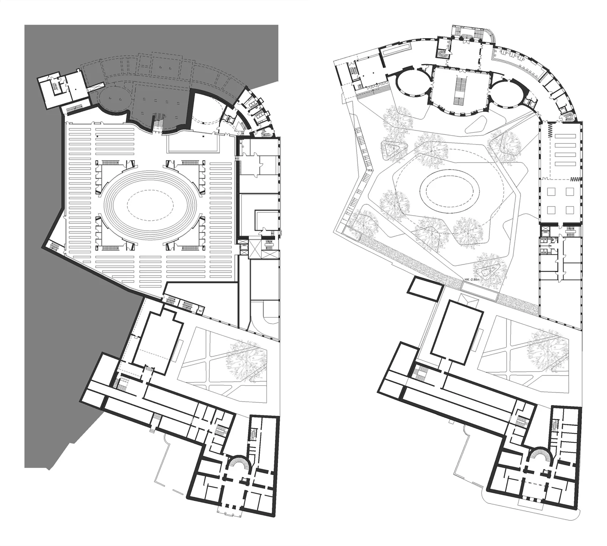

Büro und Studio
Atelier bezeichnet die Architekturpraxis. Studio bezeichnet die Abteilung Entwerfen und Ressourcen am Institut für Entwerfen und Gebäudelehre der LUH. Kempe und Thill wurden 2020 an die Universität berufen. Studio ↗ Berufung ↗
TIB Hannover · Rechercheatlas · Stand 01.11.2026
Atelier Kempe Thill untersucht, wie wirtschaftliche, anpassbare Gebäude einen eigenen Charakter gewinnen. Das Studio an der Leibniz Universität Hannover verbindet diese Frage mit Typologie, Lehre und Forschung. Büro ↗ Studio ↗


01 · Praxis
André Kempe und Oliver Thill gründeten das Büro 2000 in Rotterdam, nach ihrem Europan-5-Erfolg 1999. Das Werk reicht vom Wohnungsbau und kleinen öffentlichen Bauten bis zu Hochschulen, Transformationen und städtebaulichen Studien. Büroprofil ↗
Ausgangspunkt ist die Spannung zwischen langfristiger Anpassbarkeit und unverwechselbaren Räumen. Die spezifische Qualität soll aus der gewöhnlichen Struktur, den verfügbaren Mitteln und ihrer präzisen Ausarbeitung entstehen. Entwurfsposition ↗
Atelier bezeichnet die Architekturpraxis. Studio bezeichnet die Abteilung Entwerfen und Ressourcen am Institut für Entwerfen und Gebäudelehre der LUH. Kempe und Thill wurden 2020 an die Universität berufen. Studio ↗ Berufung ↗
02 · Person und Werk
1968 in Freiberg geboren, Architekturstudium an der TU Dresden. Vor der Berufung nach Hannover lehrte Kempe unter anderem in Delft, Arnhem, Rotterdam, Lausanne, Düsseldorf und Berlin. Büro-CV ↗
Seine publizierten Positionen verbinden ökonomische Bedingungen mit räumlicher Großzügigkeit: ein ruhiges Raster, große Elemente, nutzungsoffene Räume und eine lange Lebensdauer. Umbau wird am konkreten Gebäude beurteilt. Interview Tektoniek ↗ Gespräch / OASE ↗
03 · Erinnerung und Gespräch
Oliver Thill (1971–2026), geboren in Karl-Marx-Stadt, studierte wie Kempe in Dresden. Als Mitgründer von Atelier Kempe Thill und Professor an der LUH verband er Entwurf, Schreiben und Lehre. Er starb am 2. März 2026. Büro-CV ↗ In memoriam ↗
Die Würdigung des Studios beschreibt Architektur für Thill als kulturelles und gesellschaftliches Projekt: Räume für Konzentration, Begegnung und gemeinsames Leben. Würdigung ↗
23. Oktober 2026 · Welfenschloss, Hannover
Das veröffentlichte Programm des Gedenksymposiums nennt Johannes Kühn, Pier Paolo Tamburelli, Andrea Zanderigo, Kersten Geers und Éric Lapierre sowie ein gemeinsames Podium. Es verbindet die Erinnerung an Thill mit dem Abschluss der Ausstellung Learning Landscapes. Programm ↗
Diese Zusammenfassung bezieht sich auf Einladung und Programm. Sie gibt keine Aussagen aus den Vorträgen wieder.
04 · Positionen
Ein Haus kann offen für neue Nutzungen sein und dennoch präzise Räume und eine erkennbare Identität besitzen. Büroposition ↗
Die langfristige Raum- und Tragstruktur wird von wechselnden Programmen unterschieden. Das Studio untersucht daraus neue Typologien. Lehrkonzept ↗
Atrien und Hallen geben gemeinschaftlichem Leben einen Ort. CentraleSupélec zeigt dieses Prinzip als Transformation eines Hochschulbaus. Projekt ↗
Wiederkehrende Begriffe: spezifische Neutralität, Typologie, Raster, Robustheit, Großzügigkeit, Atrium und Kollektivraum. Büro ↗ Interview ↗ Publikation ↗
Publizierte Kritik: Architektur als Markenbild, der schnelle formale Einfall und eine bloß vorgespielte Tektonik. Die Kritik richtet sich gegen benannte Strategien; sie ist kein pauschales Urteil über andere Büros. New Discipline ↗ Gespräch ↗
05 · Visuelle Einordnung
40 Projekte, acht kritisierte Strategien und sechs TIB-Punkte. Jede Position führt zu ihrem Beleg.
Die Achsen: Ordnung ↔ Bild und Geste folgt der Auseinandersetzung mit Raster, Logik und medialer Ikonografie. Wand ↔ Dach folgt den Raumtypen des Studios sowie den Fassaden und Oberlichthallen des Büros. Ordnung / Bild ↗ Wand / Dach ↗ Shedhalle ↗
Alle Koordinaten sind eine redaktionelle Einordnung (Vermutung), keine gemessenen Vorlieben. „liebt“ bezeichnet hier eigene Büroarbeit oder ausdrücklich positive Bezugnahme; „respektiert“ eine Analyse- oder Rezeptionsreferenz ohne belegtes Lob. „lehnt ab“ gilt der jeweils belegten Strategie. TIB-Richtungen sind Studien ohne zugeschriebenes Urteil. Bilder werden zur Lesbarkeit leicht auseinandergerückt.
06 · Zeichnen und zeigen
Feine Linien, viel Weißraum und selektiv eingesetzte Grau- oder Schnittflächen. Die untersuchten Veröffentlichungen zeigen unterschiedliche Schnittdarstellungen; daraus lässt sich kein einheitlicher Stiftsatz für Originalpläne ableiten. Montmartre ↗ Het Steen ↗
Zusammenfassung der bereitgestellten Kursunterlagen: tragende Schnittkanten 0,35 mm, nichttragende Bauteile und Ansichtskanten 0,20 mm, untergeordnete Elemente 0,08 mm. Keine Füllflächen; Vektorschraffuren für Außenraum und Bodenbeläge. Studio-Kontext ↗
Die Zahlen beziehen sich auf die Kursvorgabe zur Referenzanalyse, nicht auf eine allgemeine Thesis-Norm. Das öffentliche Archiv zeigt die zugehörigen Semesterarbeiten; das interne Normblatt wird hier nicht wiedergegeben.
Zusammengefasst: A1 hoch, 20 mm Rand; Beschriftung außerhalb der Zeichnung, Arial 9 pt; Maßstabsbalken und Nordpfeil 0,20 mm, Maßstabstext 6 pt; Strichlinien 1 mm / 1 mm. Studio-Kontext ↗
Für TIB-Umbaupläne zwei getrennte Lesarten vorsehen: Eingriffsplan mit Bestand schwarz, Abbruch gelb und Neu rot; Präsentationsplan mit Bestand grau und Neu schwarz. Eigene Übertragung aus der Aufgabenanalyse, kein universeller Bürostandard. TIB-Bezug ↗

Augenhöhe und Horizont bewusst wählen, Vertikalen aufrecht halten. Raum, Tageslicht und Nutzung mit wenigen Mitteln erklären. Zusammenfassung der Darstellungsinputs; öffentliche Beispiele: Die Halle 2025 ↗
Das Studio veröffentlicht unterschiedliche Bildsprachen. Für die eigene Arbeit Materialflächen, Figuren und Vegetation so reduzieren, dass die Raumidee lesbar bleibt. Redaktionelle Empfehlung nach den Semesterdokumentationen ↗
Gleichmäßiges Tageslicht, ruhiger Hintergrund und Blickhöhe am Modell prüfen. Geometrie und Fügung sollen das Bild tragen. Zusammenfassung der Kursinputs; Anschauung: Der Pavillon 2023/24 ↗
07 · Werkübersicht
142 Einträge aus dem recherchierten Werkverzeichnis, gruppiert nach Typologie und Eingriff. Gruppenzuordnung und TIB-Auswahl sind redaktionelle Einordnungen; unbekannte Daten und Planungsstände bleiben als solche benannt. Büro-Werkverzeichnis ↗
Gruppe in der Mindmap wählen: Projekte aufklappen und Tabelle filtern. Projekt wählen: Beschreibung und Quellen öffnen. Die Tabelle lässt sich über ihre Spaltenköpfe sortieren.
| Idee / Quelle |
|---|
08 · LUH
Das Studio verbindet Entwurf und Forschung unter dem Thema Habitate der Zukunft. Das Archiv dokumentiert Pavillon, Stadtvilla, Halle sowie die Untersuchung bestehender Hochschulbauten in Learning Landscapes. Lehrkonzept ↗ Archiv ↗
Großer Raum, Dach und Wand: die öffentliche Semesterdokumentation zeigt Modelle, Pläne und verschiedene Perspektivsprachen. Arbeiten ansehen ↗
Veröffentlichte Bachelorarbeit zur Identität eines Hochschulbaus. BauNetz CAMPUS ↗
Veröffentlichte Masterarbeit zur Revitalisierung ungenutzter Bürostrukturen. BauNetz CAMPUS ↗
09 · Übertragung auf die Bauaufgabe
Das 1965 bezogene Bibliotheksgebäude besitzt eine zentrale Kataloghalle unter Glasdach und Lichtdecke. Darin liegt ein Ausgangspunkt für die Untersuchung des gemeinsamen Raums. TIB-Geschichte ↗
Die folgenden Richtungen sind eigene Entwurfsstudien (Vermutung), keine Empfehlungen oder Bewertungen von Kempe Thill. Als Projektprämisse bleiben das große Oberlicht und die zwei offenen Höfe erhalten. Lage und Geometrie des als Shed beschriebenen Dachs sind am Bestandsplan zu prüfen.
Zweites Haus an der Wilhelm-Busch-Straße; Gartenfuge und ein gezieltes Verbindungsgelenk halten Alt und Neu als Ensemble lesbar. Vergleich: De Harmonie ↗
Zurückgesetzte Dachetage mit eigener Tragstruktur um das Oberlicht; ein zusätzlicher schmaler Bau nimmt weitere Flächen auf. Licht und Tragreserven sind Prüfgrößen. Vergleich für selbstständige Tragstrukturen: MetaForum ↗
Ein Hofhaus erweitert die vorhandene Folge offener Höfe. Die Übergänge werden gemeinsame Räume zwischen konzentriertem und kommunikativem Lernen. Vergleich für Bestand und Ergänzung: Sint Lucas ↗
Bestandshülle reparieren, die Mitte als Kollektivraum stärken und das Raster in einem ruhigen Ergänzungsbau fortsetzen. Vergleiche: Kallmorgenhaus ↗ · CentraleSupélec ↗
Ein weit gespanntes Dach verbindet neue Lernbereiche. Oberlicht und Höfe werden durch großzügige Aussparungen freigehalten; Maßstab und Tageslicht müssen im Schnitt geprüft werden. Vergleich für den großen gemeinsamen Lichtraum: CentraleSupélec ↗
10 · Entwurfsbegleiter
18 ausgewählte Projekte. Die Übertragungen sind redaktionelle Lesarten (Vermutung). Bei Bibliotheksbauten anderer Büros wird damit kein persönliches Urteil von Kempe oder Thill behauptet.
Zehn Bibliotheksreferenzen mit Grundrissen vergleichen · Filter „Kempe Thill“ ↗
11 · Nachweise
Quellen stehen unmittelbar bei Texten, Projektangaben und Kartenbelegen. Die Recherche hat Stand 01.11.2026; ausgewählte Büro- und LUH-Seiten wurden für die Umsetzung am 05.11.2026 geprüft. Projektstände sind die Angaben dieser Recherche.
Die lokal gespeicherten Fotos, Pläne und Visualisierungen stammen aus der Pressegalerie von Atelier Kempe Thill. Urheber und Projektquelle stehen am Bild bzw. in der Kartenansicht. Ohne übernommenes Pressebild erscheint eine verlinkte Textkachel. Atelier Kempe Thill ↗